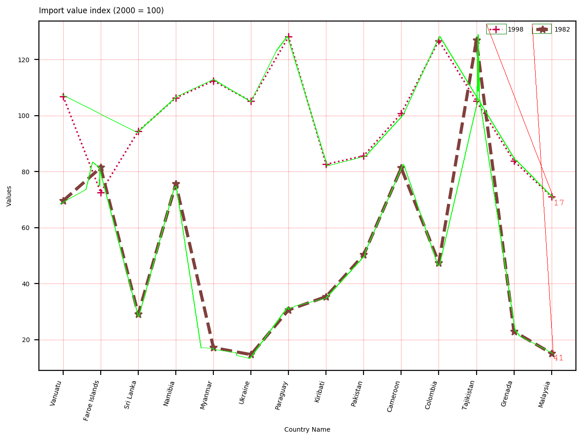
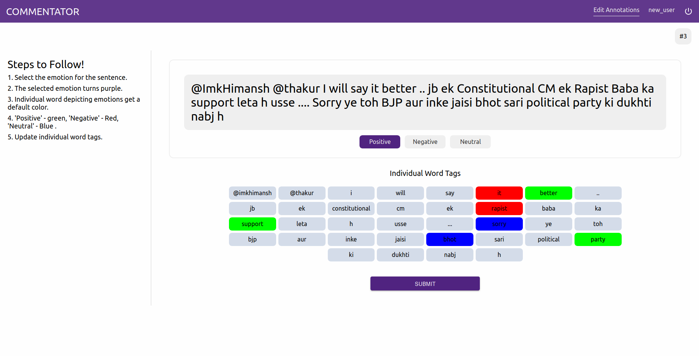
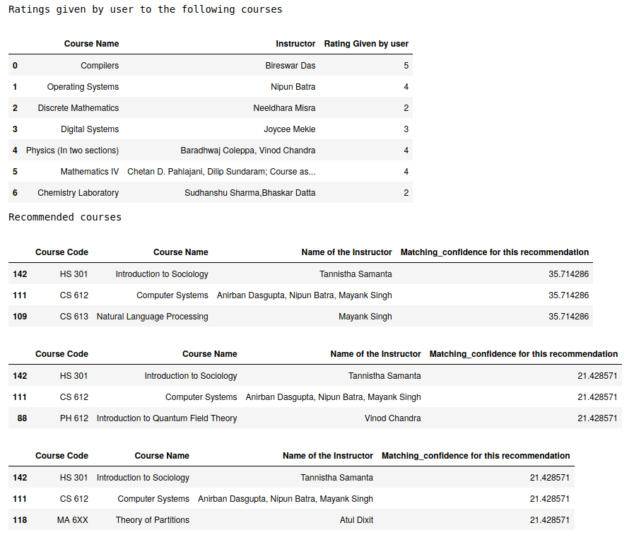
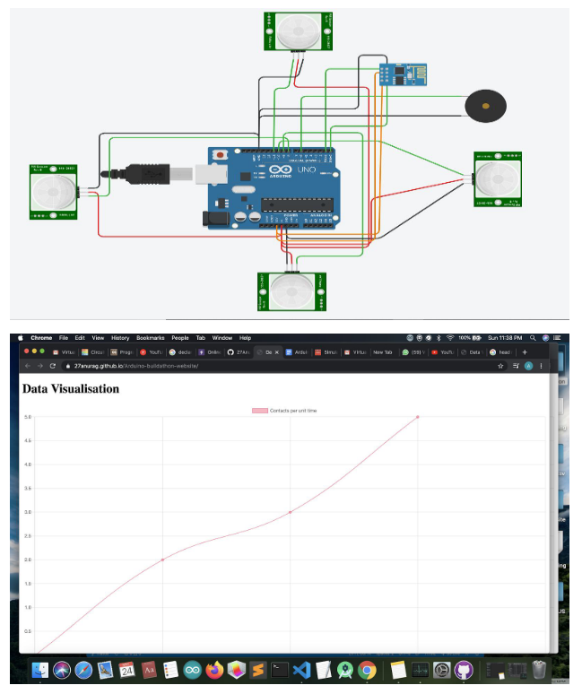

Previous works failed to understand how the underlying information is present in line charts. Proposed a novel loss function considering the slope of lines on exsisting keypoint detection models like PE-former. Showcased better qualitative and quantitive results as result of the novel loss function. On top of displaying better performance we also curated the biggest synthetic line charts with more variations compared to previous datasets.
We plan on using textual description and an optional hand-drawn sketches to perform image retrieval. We leverage the recently proposed CLIP to find an common embedding space for all three forms of data (Image, Sketech, Text). We are mainly referencing this paper and plan on building on top of the work. For now, we have implemented the proposed model in their paper and replicated their results. The authors have not released their code yet, but we have released our code for the scientific community :).
Exploring sprase self-atttention for small scale ViT with limited training data. Adapted a sparse self-attention proposed in Big Bird. The best performing sparse self-attention pattern showcased an 18% improvement in top-1 accuracy over full self-attention. Intrestingly, even random sparse self-attention showcased a 11% improvement in top-1 accuracy over full self-attention. Currently expanding the work by comparing against convolutional variants of ViT which are more data efficent.
Extended the existing COMMENTATOR annotation tool for code-mixed sentiment analysis. Annotation suggestions are provided both in sentence-level and in word-level. Integrated Hugging face models with the UI to provide suggestions in the sentence-level. Word level suggestions are given through basic lexicon lookup. Supports custom lexicon files.
Browser security is a growing concern in recent times. This work demonstrates how easy is for attackers to collect information on naive users. Specfically we exploited a vulnerablity in WebRTC based on a weakness in ICE. Further, we evaluate the exploitation method on all prominent browsers and discuss the recent prevention measures which have been deployed. Refer to the technical and work summary report for more information.
Leveraging advances in machine learning to ameliorate communication between mute and non-mute people. Implemented a deep CNN network in pure verilog including but not limited to convolution, dense, max-pooling layer and ReLu activation function. Evaluated the performance through manual evaluation the system classfied 85 out of 100 images correctly.
One step towards solving math homework :). Deployed a CNN network to detect 82 classes of objects with a classfication accuracy of 92%. Had to fall back to image processing techniques as subscipt/superscipt detection is difficult due to high size_of_objects/ size_of_image ratio; Basically very thin line between variables and their subscript/superscripts. Used heuristics based on area, location, occulsion to form the final detected equation.
Choosing courses in second and third of undergraduate studies is always a hassle especially the open electives. In order to alleviate the chaos we designed a simple course recommendation tuned for IITGN. The student has to rate past taken courses, and based on multiple factors such as topic, instructor, credits, discipline we recommend courses.
Created a personal assistant STARK for linux systems in python. Incorported various API's to do everyday student tasks. STARK is capable of handling google classroom activities, mailing, maintaining timetable, basic web search and more. Currently working on making it voice compatible.
We all know it is quite impossible to get anything for free these days from promotional codes, purely due to the number of people who wait forever to get the code. Unfortunately I do not have such spare time so I made this tool to automate the impossible task of getting goodies from promotion codes posted in Instagram stories. Made use of the web automation python library Selenium and Pytesseract for OCR to redeem goodies.
Designed lightweight head-mounted device to track remind people to upkeep social distance. The device tracks number of people the user came in contact with through PIR sensors and NodeMCU. The data collected is sent to a server where data analyzation is done. Won 2nd price in IITGN Virtual Build-a-thon.
